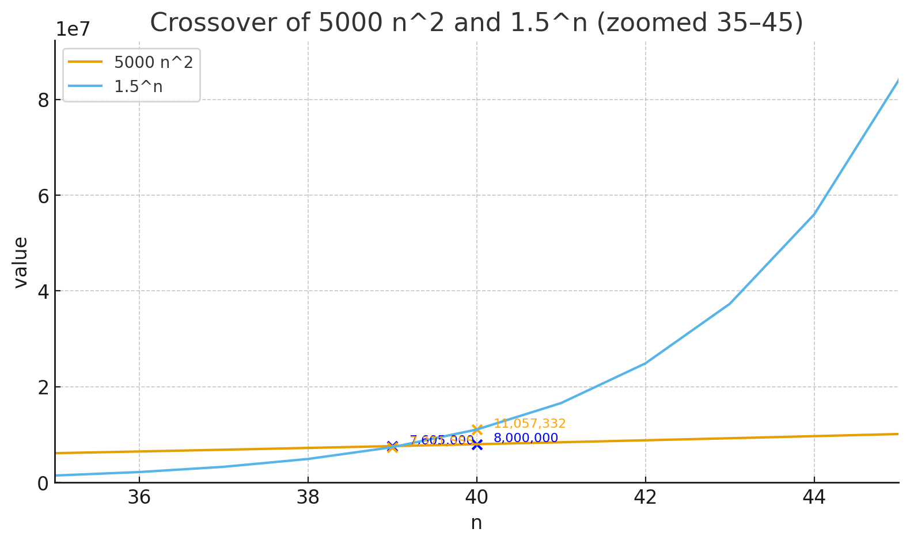
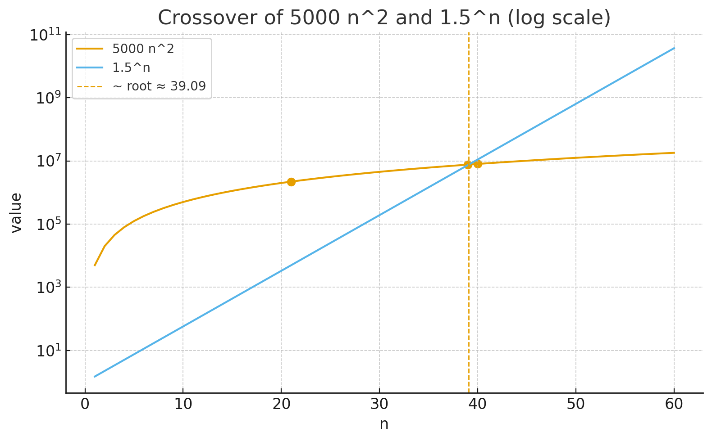
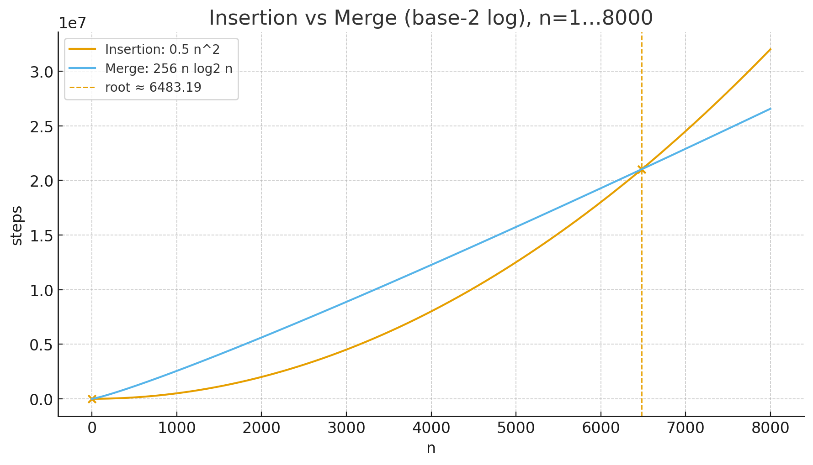
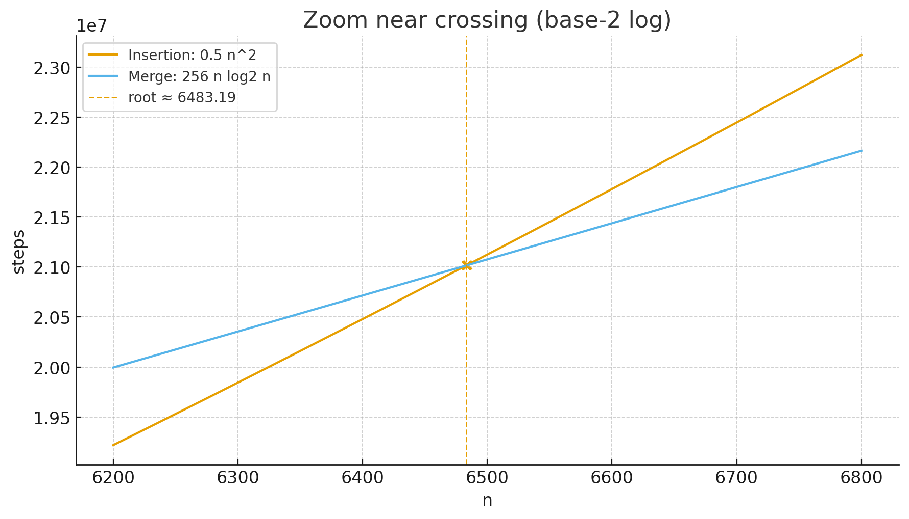
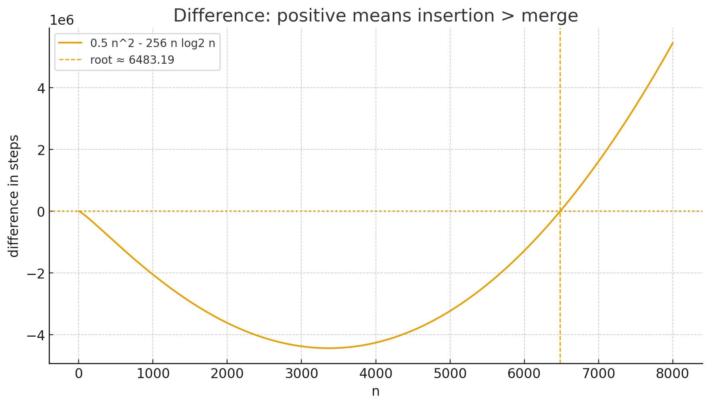

assignment #1 solution
loop invariants
The core operation of the algorithm in each iteration is to swap the elements at index j and k, where $k = n+1-j$. This effectively swaps elements from the beginning of the array with elements from the end of the array.
The correct invariants that hold true after every iteration are:
The overall effect of the algorithm is to reverse the entire array.
counting merge-sort calls
Claim: The total number of calls to Merge-Sort performed when we run Merge-Sort(A, 1, n) is 2n - 1.
Explanation: The calls to Merge-Sort form a binary tree. The leaves of this tree correspond to calls on subarrays of length 1. Since there are exactly n such subarrays (leaves), the total number of nodes in the binary tree (and thus the total number of calls) is $2n - 1$.
generalizing the claim
Claim to Prove: Let $P(k)$ be the proposition that for any integers r, p where $r-p=k \ge 0$, the number of calls for Merge-Sort(A, p, r) is $2k+1$.
Base Case (k=0):
When $k=0$, we have $r=p$. The if condition on line 1 of the algorithm ($p < r$) is false, so no further recursive calls are made. There is only the initial call. The formula gives $2(0)+1=1$, which is correct. Thus, $P(0)$ holds.
Induction Hypothesis:
Assume that for a fixed integer $k \ge 0$, the proposition $P(j)$ is true for all integers $j$ where $0 \le j \le k$.
We must show that the hypothesis implies $P(k+1)$ holds. Let $r-p = k+1$. Since $k+1 > 0$, the if condition is true, and two recursive calls are made: Merge-Sort(A, p, q) and Merge-Sort(A, q+1, r), where $q = \lfloor(p+r)/2\rfloor$.
For the first call, the size is $q-p$ $$= \lfloor(p+r)/2\rfloor - p = \lfloor(r-p)/2\rfloor \le k$$ By the I.H., this results in $2(q-p)+1$ calls.
For the second call, the size is $r-(q+1)$ $$= r - \lfloor(p+r)/2\rfloor - 1 = \lfloor(r-p)/2\rfloor - 1 \le k$$ By the I.H., this results in $2(r-q-1)+1$ calls.
The total number of calls is $$1 + (2(q-p)+1) + (2(r-q-1)+1) \newline = 2(r-p)+1 = 2(k+1)+1$$ This shows $P(k+1)$ holds.
By the principle of strong induction, we have proven that $P(k)$ holds for all $k \ge 0$.
Therefore, the total number of calls to Merge-Sort(A, p, r) is always $2(r-p)+1$.
For an array of size n (from 1 to n), this is $2(n-1)+1 = 2n-1$ calls.
algorithm performance
What is the smallest value of n such that $5000n^2$ runs faster than $1.5^n$?
Answer: The smallest integer value is n = 40.


insertion sort vs. merge sort
For which values of n does insertion sort ($0.5n^2$ steps) take more steps than merge sort ($256n \log n$ steps)?
Answer: When n ≥ 6484.



concepts review
bubblesort analysis
(a) Correctness:
To fully prove that Bubblesort sorts, you must also show that the output array A' is a permutation of the original input array A. This ensures no elements are lost or created.
(b) Inner Loop Invariant (for j):
At the start of each iteration of the inner loop (lines 2-5), the element $A[j]$ is the minimum value in the subarray $A[j..n]$.
\[ A[j] = \min \{ A[k] : j \leq k \leq n \} \]
(c) Outer Loop Invariant (for i):
At the start of each iteration of the outer loop (lines 1-7), the subarray $A[1..i-1]$ contains the $i-1$ smallest elements of the original array, in sorted order.
$A[i..n]$ consists of the $n−i + 1$ remaining values originally in $A[1..n]$.
Initialization: Before the first iteration, $i=1$. The subarray $A[1..0]$ is empty and the invariant holds vacuously.
Maintenance: By the invariant, $A[1..i-1]$ contains the sorted, smallest elements. From part (b), we know the inner loop finishes by placing the smallest remaining element (from $A[i..n]$) into $A[i]$. Thus, $A[1..i]$ now contains the $i$ smallest values originally in $A[1..n]$, in sorted order.
Moreover, since the for loop of lines 2-5 permutes $A[i + 1..n]$, the subarray $A[i + 1..n]$ consists of the $n−i$ remaining values originally in $A[1..n]$.
Termination: The outer loop terminates when $i=n$. At this point, the invariant states that $A[1..n-1]$ contains the n-1 smallest elements in sorted order. Including the last element, we see that the entire array $A[1..n]$ is sorted.
(d) Running Time:
The running time of Bubblesort is $\Theta(n^2)$ in all cases. Its worst-case running time is the same as that of Insertion Sort.